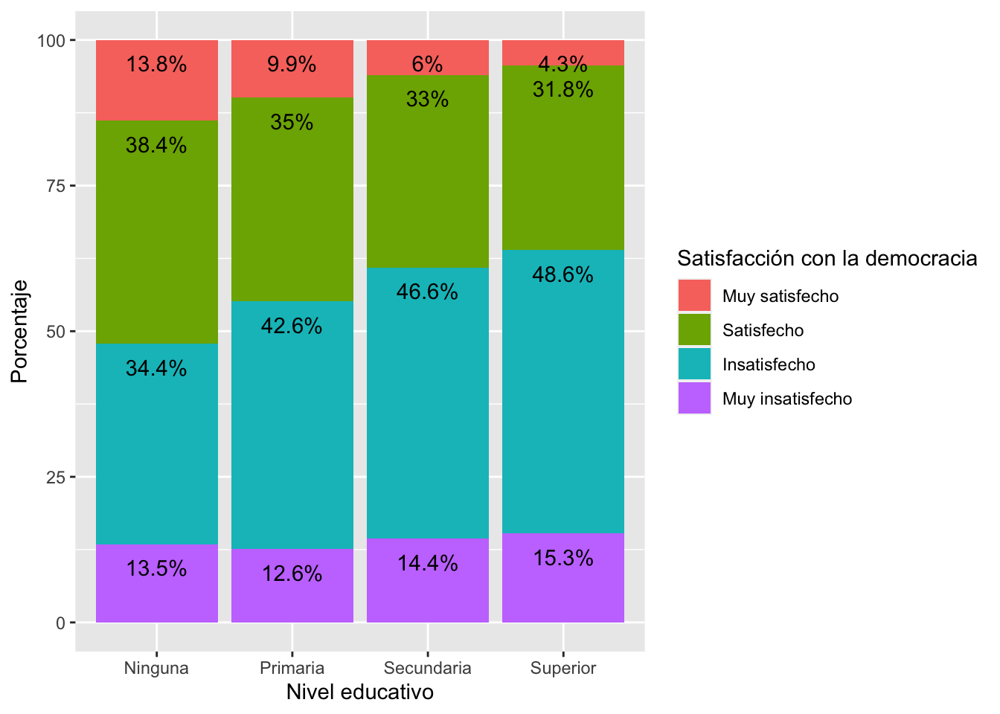

Introducción
La prueba t y la prueba de ANOVA trabajan con una variable
dependiente numérica y una variable independiente de tipo factor. Cuando
la variable de factor tiene 2 grupos, se trabaja con la prueba t. Cuando
la variable de factor tiene más de 2 grupos, se trabaja con la prueba de
ANOVA.
En ambos casos se trata de evaluar una relación bivariada: analizar
el impacto de una variable independiente categórica en una variable
dependiente numérica.
Prueba t:
Variable independiente (sexo) -> Variable dependiente
(ingresos)
Variable independiente (afroamericanos) -> Variable
dependiente (ingresos)
Variable independiente (urbano/rural) -> Variable dependiente
(escala de simpatía por candidato X)
ANOVA:
Variable independiente (etnicidad) -> Variable dependiente
(ingresos)
Variable independiente (región) -> Variable dependiente (voto
en primera vuelta)
Variable independiente (NSE) -> Variable dependiente (escala
de conservadurismo)
El paso que vamos a dar en esta sección es analizar la
relación bivariada entre dos variables de factor (o
categóricas). Esta evaluación se realiza mediante la prueba de
chi-cuadrado.
Chi-cuadrado:
Variable independiente (país) -> Variable dependiente (apoyo a
la democracia).
Variable independiente (situación económica) -> Variable
dependiente (satisfacción con la vida)
Variable independiente(nivel educativo) -> Variable
dependiente (satisfacción con la democracia)
Como dijimos en clases anteriores, la comparación de proporciones son
casos especiales de lo que veremos ahora.
Tablas de contingencia
Se trata de tablas de doble entrada (como mínimo) para analizar los
datos de variables categóricas. Una variable va en las filas y otra en
las columnas. Se puede tener los totales por filas o por columnas, que
se llaman “distribuciones marginales” y que coinciden con la
distribución de la variable individual.
Se puede calcular porcentajes de 3 maneras:
Se recomienda que la variable independiente sea colocada en las
columnas y la variable dependiente en las filas. Si se calcula los
porcentajes por columnas de esta manera, se podrá comparar las
distribuciones condicionales de la variable dependiente por cada grupo
de la variable independiente.
En este documento vamos a trabajar con el reporte comparado El
Pulso de la Democracia, disponible aquí.
Este reporte presenta los principales hallazgos del proyecto del
Barómetro de las Américas, organizado por el Proyecto de Opinión Pública
en América Latina (LAPOP, por sus siglas en
inglés). En este documento se reportan los resultados de la última ronda
disponible de 2018/19.
Pueden descargar los datos de manera libre aquí.](http://datasets.americasbarometer.org/database/login.php).)
En este enlace, se pueden registrar o entrar como “Free User”. En el
buscador, se puede ingresar el texto “2021”. Ahí se tendrá acceso a las
bases de datos completas de cada país de la ronda 2021en versión para
STATA. Se descarga la base de datos en formato .dta. Una vez descargada
y guardada en el directorio de trabajo, se tiene que leer la base de
datos como un objeto dataframe en R. El cuestionario de esta base de
datos puede ser visto en este enlace.
library(rio)
peru = import("PER_2021_LAPOP_AmericasBarometer_v1.2_w.dta")
Desde la pag. 20 del reporte se hace una evaluación de la democracia
en la práctica. En particular, se trabaja con la variable PN4. En
general, ¿usted diría que está muy satisfecho(a), satisfecho(a),
insatisfecho(a) o muy insatisfecho(a) con la forma en que la democracia
funciona en Perú. El reporte se indica que los datos se recodifican en
una variable dicotómica. En este documento vamos a trabajar con la
variable original. Esta variable es una variable categórica, ordinal o
de factor. En el Gráfico 1.14 del reporte se presenta una evaluación de
la satisfacción con la democracia por variables demográficas y
socioeconómica, como nivel educativo, quintiles de riqueza, lugar de
residencia, género o grupos de edad. Es decir, se usa la satisfacción
con la democracia como variable dependiente y a cada variable
demográficas y socioeconómica como variables independientes.
Por ejemplo, se reporta que entre los hombres, el 42.3% están
satisfechos con la democracia, mientras que entre las mujeres, este
porcentaje disminuye a 36.9%. Aquí vamos a analizar estas mismas
variables, pero usando la variable PN4 en su forma original.
Antes de proceder, tenemos que recodificar las variables, ponerlas en
forma de factor y etiquetar.
peru$genero = car::recode(peru$q1tb, "1=1; 2:3=2")
table(peru$genero)
##
## 1 2
## 1617 1421
peru$genero = as.factor(peru$genero)
levels(peru$genero) = c("Hombre", "Mujer/Otro")
table(peru$genero)
##
## Hombre Mujer/Otro
## 1617 1421
Lo mismo para la variable PN4 que se transforma en la variable
“satis”.
peru$satis = as.factor(peru$pn4)
levels(peru$satis) = c("Muy satisfecho", "Satisfecho", "Insatisfecho", "Muy insatisfecho")
table(peru$satis)
##
## Muy satisfecho Satisfecho Insatisfecho Muy insatisfecho
## 31 274 905 266
Para calcular la tabla de satisfacción con la democracia,
independiente del género de la persona, se puede calcular los
porcentajes de esta variable.
prop.table(table(peru$satis))*100
##
## Muy satisfecho Satisfecho Insatisfecho Muy insatisfecho
## 2.100271 18.563686 61.314363 18.021680
Lo primero es calcular la tabla de contingencia entre satisfacción y
género. El comando table nos brinda las frecuencias
absolutas del cruce entre ambas variables. La variable dependiente
“satisfacción con la democracia” se ubica en las filas y la variable
independiente “género” en las columnas. Se verifica que las 1,727
observaciones que están muy satisfechas con la democracia, se dividen en
919 hombres, 803 mujeres y 5 NAs.
table(peru$satis, peru$genero)
##
## Hombre Mujer/Otro
## Muy satisfecho 19 12
## Satisfecho 161 113
## Insatisfecho 466 439
## Muy insatisfecho 144 122
Para calcular las frecuencias relativas, se tiene que anidar
table dentro del comando prop.table. Si de
anida solamente, prop.table calcula las proporciones sobre
el total. Se agrega la especificación (…,2) para indicar
que se quiere las proporciones sobre las columnas. Se anida todo dentro
del comando addmargins para verificar la suma de
proporciones sobre las columnas y no se incluye los valores
perdidos.
prop.table(table(peru$satis, peru$genero))*100
##
## Hombre Mujer/Otro
## Muy satisfecho 1.2872629 0.8130081
## Satisfecho 10.9078591 7.6558266
## Insatisfecho 31.5718157 29.7425474
## Muy insatisfecho 9.7560976 8.2655827
prop.table(table(peru$satis, peru$genero), 2)*100
##
## Hombre Mujer/Otro
## Muy satisfecho 2.405063 1.749271
## Satisfecho 20.379747 16.472303
## Insatisfecho 58.987342 63.994169
## Muy insatisfecho 18.227848 17.784257
En la segunda tabla se muestra las distribuciones condicionales de
satisfacción con la democracia por cada grupo de género. Por ejemplo, el
2.4% de los hombres se encuentras muy satisfechos con la democracia, un
porcentaje algo similar el 1.7% de las mujeres. El 20.4% de los hombres
se encuentran satisfechos con la democracia, 4 puntos porcentuales por
encima que las mujeres.
De esta manera, se pueden comparar los porcentajes por cada categoría
de la variable dependiente entre grupos de la variable independiente y,
además, se puede comparar con los porcentajes no condicionales de la
variable satisfacción con la democracia.
Independencia y dependencia
Decimos que dos variables categóricas son
estadísticamente independientes si las
distribuciones condicionales (poblacionales) son idénticas por cada
categoría de la variable independiente. Por ejemplo, la siguiente tabla,
si mostrara los porcentajes poblacionales condicionales, estos son
idénticos entre grupos de la variable independiente. Es decir,
independientemante de ser hombre o mujer, las distribución de
satisfacción por la democracia es la misma. Ser hombre o mujer no cambia
nada las opiniones con respecto a la satisfacción con la democracia.
| Muy satisfecho |
2.4% |
1.7% |
| Satisfecho |
20.4% |
16.5% |
| Insatisfecho |
59% |
64% |
| Muy insatisfecho |
9.8% |
8.3% |
VI: fuma ———> VD: cáncer de pulmón
| Cáncer al pulmón |
Fumador |
No fumador |
| Si desarrolla cáncer |
10 |
10 |
| No desarrolla cáncer |
90 |
90 |
| Total |
100% |
100% |
A medida que estos porcentajes difieren más entre sí, hay más
probabilidades que ambas variables estén relacionadas. En realidad, a
medida que estos porcentajes difieren más de la distribución no
condicional de la variable satisfacción con la democracia también habría
una mayor probabilidad de que estén relacionadas.
Prueba de independencia de chi-cuadrado
Se basa en la comparación de las frecuencias observadas (las
observaciones que se recoge en campo) versus las frecuencias esperadas
(las observaciones que debería haber en cada celda de la tabla si las
variables fueran independientes). En ese sentido \(H_0: f_e = f_o\) o lo que es lo mismo que
las variables son independientes.
En nuestro ejemplo, podemos calcular las frecuencias observadas con
el comando table. Se trata del número de observaciones en
cada una de las 8 celdas del cruce de ambas variables.
addmargins(table(peru$satis, peru$genero), 1)
##
## Hombre Mujer/Otro
## Muy satisfecho 19 12
## Satisfecho 161 113
## Insatisfecho 466 439
## Muy insatisfecho 144 122
## Sum 790 686
Para el cálculo de las frecuencias observadas requerimos la
distribución de la variables “satisfacción con la democracia”.
addmargins(table(peru$satis))
##
## Muy satisfecho Satisfecho Insatisfecho Muy insatisfecho
## 31 274 905 266
## Sum
## 1476
prop.table(table(peru$satis))*100
##
## Muy satisfecho Satisfecho Insatisfecho Muy insatisfecho
## 2.100271 18.563686 61.314363 18.021680
Si no hubiera relación entre las variables, tendríamos los mismo
porcentajes reproducidos en las distribuciones condicionales.
| MS |
2.1% de hombres-> #observaciones si no hay relación
cuánto es el 6.4% de 790= 50.56 #obs si NO hubiera relación
Pero, 19 es lo realmente observado
(919-50.56)^2 |
2.1% de mujeres
cuánto es el 6.4% de 686 = 43.9 #obs si NO hubiera relación
Pero, 12 es lo realmente observado
(12-43.9)^2 |
| S |
18.6% |
18.6% |
| I |
61.3% |
61.3% |
| MI |
18% |
18% |
|
13608 |
|
Prueba estadística
El chi-cuadrado resume qué tan cerca están las frecuencias esperadas
de las frecuencias observadas. Mientras más pequeña la distancia en cada
celda, menos probabilidades de rechazar la hipótesis nula. Mientras la
distancia más grande en cada celda ,más probabilidades de rechazar la
hipótesis nula.
\[
\chi^2 = \sum\frac{(f_o-f_e)^2}{f_e}
\]
Si fo=fe en cada celda, entonces χ^2 = 0
La distribución de chi-cuadrado depende de los grados de libertad
(gl).
gl = (filas -1)*(columnas -1)
La distribución está concentrada en los valores pequeños (sesgo
hacia la derecha)
Con el valor de \(\chi^2\) y con
los gl, se calcula un p-value, que tiene que ser menor de 0.05 para
rechazar la Ho.
Se requiere que haya al menos 5 observaciones en cada
celda
En R se usa el comando chisq.test para calcular el
estadístico y el p-value. Esta prueba es mejor guardarla en un objeto
nuevo
prueba = chisq.test(peru$satis, peru$genero)
prueba$observed
## peru$genero
## peru$satis Hombre Mujer/Otro
## Muy satisfecho 19 12
## Satisfecho 161 113
## Insatisfecho 466 439
## Muy insatisfecho 144 122
prueba$expected
## peru$genero
## peru$satis Hombre Mujer/Otro
## Muy satisfecho 16.59214 14.40786
## Satisfecho 146.65312 127.34688
## Insatisfecho 484.38347 420.61653
## Muy insatisfecho 142.37127 123.62873
La primera tabla presenta las frecuencias observadas, que es lo que
realmente se recoge en campo. La segunda tabla presenta las frecuencias
esperadas (si no hubiera relación). Se comprueba los cálculos que se
hizo en la tabla anterior (las diferencias son debido a la aproximación
decimal).
El estadístico \(\chi^2\) resume las
diferencias entre las frecuencias observadas y esperadas en cada celda y
las suma de acuerdo a la fórmula.
prueba
##
## Pearson's Chi-squared test
##
## data: peru$satis and peru$genero
## X-squared = 5.3129, df = 3, p-value = 0.1503
La prueba nos da como resultado un p-value < 0.15, por lo que NO
se puede rechazar la hipótesis nula y se concluye que no sabemos si
existe asociación/relación/dependencia entre las variables.
Medidas de asociación
La prueba de \(\chi^2\) nos indica
si hay relación o si no se puede decir que haya una relación entre las
variables, pero no nos dice nada sobre la fuerza de la
relación. Se requiere otra prueba para indicar la magnitud de
la relación. Es decir:
Primera pregunta: ¿hay asociación? La prueba de \(\chi^2\) nos da una respuesta. Mientras más
pequeño el p-value, mayor la evidencia de asociación.
Segunda pregunta: ¿qué tan fuerte es la asociación?
Puede darse el caso de \(\chi^2\)
grandes con asociaciones débiles, generalmente cuando el N de la muestra
es grande. En nuestro caso, por ejemplo, las diferencias entre los
porcentajes de satisfacción con la democracia entre hombres y mujeres no
son muy grandes y sin embargo el p-value nos lleva a concluir que existe
asociación. Es probable que este sea un caso de una asociación (de
acuerdo al p-value) pero con una fuerza débil.
Una medida de asociación es un estadístico que resume la fuerza de la
dependencia entre dos variables. El rango varía desde asociaciones
débiles, generalmente cercanas a 0, hasta asociaciones fuertes, más
cercanas a 1.
Para variables nominales, las medidas de asociación varían entre 0 y
1.
Para variables ordinales, las medidas de asociación también indican
la dirección de la relación, por lo que varían entre -1 a +1. Los
valores negativos indican una relación inversa entre las variables (a un
mayor valor de la VI, un menor valor de la VD) y los positivos una
relación directa entre las variables (a un mayor valor de la VI, un
mayor valor de la VD).
En nuestro ejemplo tenemos una variable ordinal -satisfacción con la
democracia- y una variable nominal -género-, por lo que se tiene que
asumir que se está trabajando con variables nominales. En el caso de
variables nominales tenemos varias alternativas, como el coeficiente de
contingencia o la V de Cramer, ambas variando entre 0 y 1.
Para hacer esta evaluación, se guarda la tabla de contingencia en un
objeto y se usa el comando assocstats de la librería
vcd.
library(vcd)
## Loading required package: grid
tabla = table(peru$satis, peru$genero)
assocstats(tabla)
## X^2 df P(> X^2)
## Likelihood Ratio 5.3399 3 0.14853
## Pearson 5.3129 3 0.15026
##
## Phi-Coefficient : NA
## Contingency Coeff.: 0.06
## Cramer's V : 0.06
Ambas medidas de asociación tienen un valor de 0.056. Este resultado
está mucho más cerca de 0 que de 1, por lo que podemos concluir que
estamos ante una relación débil. Para poner unos límites arbitrarios,
podemos indicar que:
Medidas de asociación entre 0 y 0.3 son relaciones
débiles.
Medidas de asociación entre 0.3 y 0.6 son relaciones
moderadas.
Medidas de asociación entre 0.6 y 1 son relaciones
fuertes.
Tabla cruzada de satisfacción con la democracia según nivel
educativo
El Gráfico 1.14 del reporte muestra los datos de satisfacción con la
democracia (según la variable recodificada dummy) por niveles educativo.
Como segundo ejemplo, aquí vamos a replicar esa relación usando la
variable original de tipo factor.
Lo primero es recodificar la variable educación. La variable original
“edr” separa a los analfabetos de los que tienen primaria. Los
analfabetos son un grupo muy pequeño y podrían causar problemas.
peru$educ = car::recode(peru$edr, "0:1=1; 2=2; 3=3")
table(peru$educ)
##
## 1 2 3
## 219 1020 1799
peru$educ = as.factor(peru$educ)
levels(peru$educ) = c("Hasta primaria", "Secundaria", "Superior")
table(peru$educ)
##
## Hasta primaria Secundaria Superior
## 219 1020 1799
Con la variable recodificada se puede calcular la tabla cruzada de
satisfacción con la democracia según niveles educativos.
addmargins(prop.table(table(peru$satis, peru$educ), 2)*100, 1)
##
## Hasta primaria Secundaria Superior
## Muy satisfecho 3.225806 3.012048 1.468927
## Satisfecho 21.505376 19.277108 17.853107
## Insatisfecho 50.537634 59.839357 63.276836
## Muy insatisfecho 24.731183 17.871486 17.401130
## Sum 100.000000 100.000000 100.000000
Para comprobar la relación entre estas variables, también se puede
usar la prueba de independencia de \(\chi^2\). Esta evaluación se guarda en un
objeto “prueba2”.
prueba2 <- chisq.test(peru$satis, peru$educ)
## Warning in chisq.test(peru$satis, peru$educ): Chi-squared approximation may be
## incorrect
prueba2
##
## Pearson's Chi-squared test
##
## data: peru$satis and peru$educ
## X-squared = 10.035, df = 6, p-value = 0.1232
Con el valor de estadístico se obtiene un p-value mayor a 0.05, con
lo que NO se rechaza la hipótesis nula y se afirma que las frecuencias
observadas son diferentes de las esperadas, con lo que concluimos que no
sabemos si existiría una relación de dependencia entre las
variables.
Para evaluar la fuerza de la relación, se tiene que trabajar con
otras medidas de asociación, debido a que se tiene una tabla con dos
variables ordinales. Para esto usaremos la librería
DescTools y los comandos GoodmanKrustalGamma,
KendallTauB y StuartTauC.
library(DescTools)
tabla2 <- table(peru$satis, peru$educ)
GoodmanKruskalGamma(tabla2)
## [1] 0.02396059
KendallTauB(tabla2)
## [1] 0.01314391
StuartTauC(tabla2)
## [1] 0.01063493
Otra forma es usando la librería oii y el comando
association.measures.
library(oii)
association.measures(peru$satis, peru$educ)
## Chi-square-based measures of association:
## Phi: 0.082
## Contingency coefficient: 0.082
## Cramer's V: 0.058
##
## Ordinal measures of association:
## Total number of pairs: 1088550
## Concordant pairs: 165022 ( 15.16 %)
## Discordant pairs: 157299 ( 14.45 %)
## Tied on first variable: 247028 ( 22.69 %)
## Tied on second variable: 284058 ( 26.1 %)
## Tied on both variables: 235143 ( 21.6 %)
##
## Goodman-Kruskal Gamma: 0.024
## Somers' d (col dep.): 0.013
## Kendall's tau-b: 0.013
## Stuart's tau-c: 0.011
En este caso se observan las medidas de asociación para variables
ordinales. Este comando reporta 4 se estas medidas, todas ellas varían
entre -1 a +1. En nuestro ejemplo, todas tiene signo positivo, lo que
indica una relación directa entre ambas variables. Esto parecería ir
contra lo que se reporta en el Gráfico 1.14 del reporte donde se observa
claramente que la satisfacción con la democracia disminuye a niveles
educativos más altos, lo que se expresaría en un signo negativo.
Finalmente, el valor de las medidas de asociación son menores a 0.3, con
lo que se indica que la relación entre las variables es débil.
En el Gráfico 1.14 se observa que se tiene un mayor porcentaje de
satisfacción con la democracia entre los menos educados. Esta relación
también puede observarse en este gráfico. Los sectores “muy satisfechos”
(en rosado) y “satisfechos” (en verde) disminuyen a medida que se pasa
de ninguna a primaria, secundaria y superior. Esta aparente
contradicción es debido a la forma como se ha codificado la satisfacción
con la democracia (variable “satis” que se crea desde “pn4”). La
variable original tiene valores entre 1 a 4, donde 1 significa “muy
satisfecho” y 4 “muy insatisfecho”. Es decir, esta variable tiene una
codificación donde valores altos indican “menos” de la variable. Es por
ese motivo que la prueba de asociación resulta con un signo positivo,
que en este caso indicaría que un valor mayor de la variable de
educación significa “más” de la variable satisfacción con la democracia
(que en realidad es menos). Para evitar esta confusión se debió cambiar
la monotonía de la variable satisfacción con la democracia para que
valores más altos indiquen una mayor satisfacción y, con esto, se
obtenga un signo negativo en las medidas de asociación. En esta sección
se ha procedido de esa manera para llamar la atención a que la
codificación tiene consecuencias en los resultados y puede llevar a
confusión si no se presta atención.
Gráficos bivariados categóricos
Para crear un gráfico se tiene que guardar la tabla como un
dataframe. Se usa el comando as.data.frame para salvar los
porcentajes y poder usarlos con el comando ggplot.
tabla3 = as.data.frame(prop.table(table(peru$satis, peru$educ), 2)*100)
tabla3
## Var1 Var2 Freq
## 1 Muy satisfecho Hasta primaria 3.225806
## 2 Satisfecho Hasta primaria 21.505376
## 3 Insatisfecho Hasta primaria 50.537634
## 4 Muy insatisfecho Hasta primaria 24.731183
## 5 Muy satisfecho Secundaria 3.012048
## 6 Satisfecho Secundaria 19.277108
## 7 Insatisfecho Secundaria 59.839357
## 8 Muy insatisfecho Secundaria 17.871486
## 9 Muy satisfecho Superior 1.468927
## 10 Satisfecho Superior 17.853107
## 11 Insatisfecho Superior 63.276836
## 12 Muy insatisfecho Superior 17.401130
En este caso, como tenemos 4 categorías para satisfacción con la
democracia y otras 4 para nivel educativo, un gráfico de barras
separadas crearía 16 barras, lo que complicaría la comparación. Por eso,
en este caso, se prefiere el tipo de barras apiladas.
library(ggplot2)
ggplot(data=tabla3, aes(x=Var2, y=Freq, fill=Var1, ymax=100))+
geom_bar(position="stack", stat="identity")+
geom_text(aes(label=paste(round(Freq, 1), "%", sep="")),
position=position_stack(), vjust=1.5)+
labs(fill="Satisfacción con la democracia")+
ylab("Porcentaje")+
xlab("Nivel educativo")

